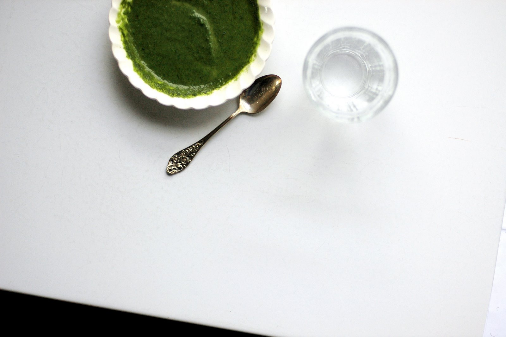
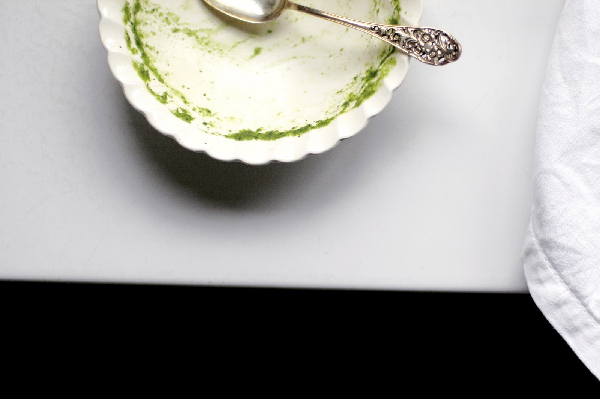

That easy
It’s hard to know what to say about soup. I mean, it’s soup. It’s a liquid, sort of, but it’s eaten with a spoon. It’s not a steak, or chocolate, or fancy cheese, or an ice cream sundae. It’s what people eat when they’re sick or miserable or old, wearing dentures that clack like sad, weary castanets. Soup is a hard sell. But if I could, I would eat it every day. Sometimes, actually, I do. I never get tired of soup. I know that it’s April, and that it’s springtime and so on, and that we’re rapidly approaching the end of soup season, but I want to tell you about one in particular, the one I ate every day last week. Anyway, between you and me, I don’t really believe in soup season. It’s always soup season. Also, it SNOWED here this weekend. SNOWED.
Before I say anything else, I feel that I should warn you about the photograph that follows. It’s just my lunch, and it’s not scary, per se, but as soups go, it looks pretty intense. In fact, if I stare at it long enough, I start to worry that the Swamp Thing might surface at any second, leap out of the bowl, and come after me with the pointy end of that spoon.

Which, come to think of it, probably wouldn’t be that bad, because with him out of the bowl, I’d have all the soup to myself. And there are always more spoons in the drawer.
{kind=link}

I am in love with this soup. So in love. I first got the idea for it last month, during our road trip to San Francisco, when we ate lunch at Zuni Café and happened to order something humbly described as a “spinach and green garlic soup.” I didn’t expect it to be anything special; it just sounded healthy and clean, like something you’d want to eat after being cooped up in a car for three days. And what the waiter set down seemed, by all appearances, to be just that. It was a bright, saturated shade of green – almost lime green, really – and it looked alarmingly like wheatgrass juice. But it smelled rich and velvety, so I dipped my spoon. It was mellow and sweetly vegetal, delicate and earthy, with a soft, musky whiff of garlic. It was delicious. It tasted, I thought, the way the color green would probably taste if you could soften it in butter, purée it with stock, and serve it in a bowl. It was gorgeous in all sorts of ways.
{kind=link}
But then, of course, we had to come home, and San Francisco being some 800-odd miles away, I started to get a little desperate for that soup. I usually prefer to focus my desperation on things like chocolate, or cold beers on hot days, but this was getting rough. So I went out in search of green garlic. I’d never bought it before, to tell you the truth, and it required a little education. Green garlic, I learned, is just young garlic, the plant harvested in its shoot stage, before the bulbous root end swells into what we recognize as a head of garlic. Outside of farmers’ markets, it’s not easy to come by, and it’s only available for a little while, sometime between March and May. Green garlic shoots look like scallions or small leeks, but they taste like garlic at its most delicate and sweet. Sometimes their stalks are streaked with pink, which makes them look impossibly cute, as though they were shy and blushing. I saw some at Whole Foods a couple of weeks ago, but they were 12 dollars per pound, so I waited. And then I waited some more. And then I spotted a few small, slender bunches on one of the tables at the farmers’ market. And most notably, they were only two dollars each. So I snatched up three bunches, and then I made soup.
I’m not usually good at recreating dishes that I’ve eaten somewhere else, but this time, I had a good feeling about it. I mean, I had spinach, green garlic, butter, and stock: all I had to do, I figured, was get out of the way and let them do what they do. So I did. I sliced and stirred, and lo and behold, there was the soup. It’s almost never that easy, but I swear, it was. So, to celebrate, I ate it for four days straight. And then I made a second batch. And so long as the season stays definitively soupy, and probably even if it doesn’t, I think there’ll be a third one too.
Spinach and Green Garlic Soup
The green garlic shoots I’ve been using are fairly small and slim, like scallions, and they’ve been wonderfully mild and sweet. If yours are larger, they might be a bit more pungent, but their flavor should mellow nicely with cooking. And if you can’t find green garlic, I’ll bet you could get a similar flavor with some regular garlic – much less, though – and some chopped leek.
Also, if you’re looking for a decent store-bought vegetable stock, you might try this one. I make my own stock when I can, but sometimes, you know, eh. So this is a handy thing to have in the pantry. Its ingredients are all natural and non-weird, and unlike a lot of other store-bought vegetable stocks, it doesn’t contain tomato, which can taste too strong for preparations like this.
2 Tbsp. olive oil
1 Tbsp. unsalted butter
½ to ¾ lb. green garlic, thinly sliced (white and pale green parts only)
Salt
1 qt. vegetable or mild chicken broth
8 to 10 oz. baby spinach leaves
1 Tbsp. crème fraîche
Warm the olive oil and butter in a large saucepan or Dutch oven over medium heat. Add the green garlic and a pinch of salt, and cook, stirring frequently, until it is soft and translucent. Also, as the garlic cooks, you should notice that its scent changes from raw and sharp to sweeter and more mellow; that’s what you’re after. When the garlic is ready, add the stock, raise the heat a bit, and bring it to a boil. Then adjust the heat to maintain a gentle simmer, and continue to cook for about 15 minutes. Add the spinach, and immediately turn off the stove. Let it sit for 5 minutes – not too long, or the spinach will lose its color – and then, working in batches, purée the mixture in a blender. (Remember never to fill the blender more than a quarter or a third full, because the hot liquid will expand when you turn on the motor.) The soup should be a rich shade of green and very smooth.
Return the soup to the pot, and place it over low heat to rewarm gently. Add 1 Tbsp. crème fraîche and another pinch or two of salt. Taste, and adjust seasoning as necessary.
Serve warm or hot, with a drizzle of olive oil or a dollop of crème fraîche, if you like.
Yield: 4 servings